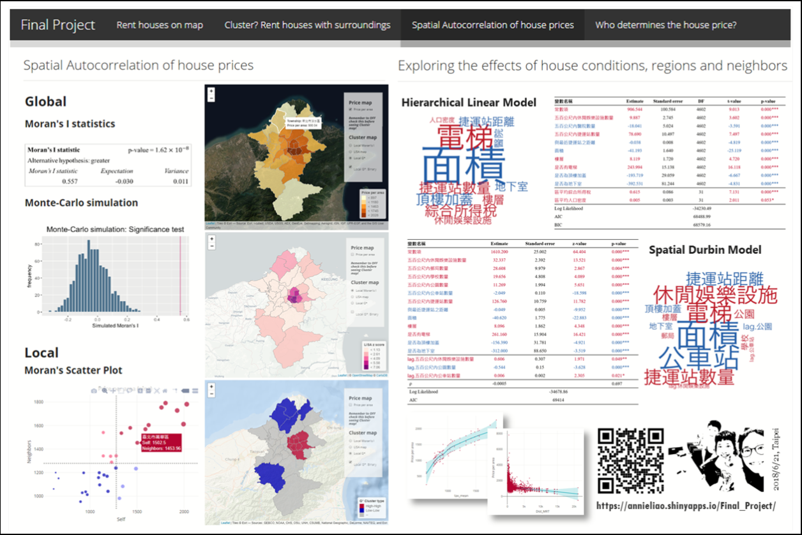

Read more...
From questionnaire to flow maps: City flow patterns in Hong Kong

Read more...
What determines rental house prices? Explore from a geospatial perspective

Read more...
Customized house rental recommendation system
Read more...
家的羈絆，讓台灣農民從北到南的從農故事